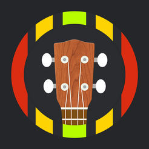

Oké, je hebt dus een ukulele gekocht en zit vol met enthousiasme om te beginnen! Ho daar Tijger, eerst moet je nog een paar dingen weten voordat je kan spelen. Ik heb speciaal voor jou de basics op een rijtje gezet:
Delen van een Ukulele
Het is belangrijk te weten hoe elk deel van de ukelele heet, zodat je weet waar
ik het over heb en ook voor algemene kennis. Hieronder zie je een afbeelding. Het
is wel in het Engels, want zo heb ik het ook geleerd door youtubevideos. Btw
Tip: Heel veel uitleg en liedjes kan je vinden op youtube door echte ukuleleleraren
voor als je liever zelf thuis leert en geen zin hebt om elke week naar een leraar
te gaan. (Zoals ik).
Stemmen
Waarschijnlijk krijg je je ukulele niet al gestemd binnen, dat moet je zelf doen.
Je gitaar stemmen is letterlijk ervoor zorgen dat je snaren geen valse noten produceren,
maar mooie heldere klanken. Je kan stemmen met een stemapparaatje, maar als je broke
bent zoals ik kan je ook een app gebruiken. Mijn favoriet is: Tunerforukulele van
rui qin. (Available in the App Store woe) Het heeft ook andere gave dingetjes zoals
een meteronoom, (Een apparaatje wat om de zoveel (milli)seconden tikt, zodat je
in de maat blijft.) akkoorden (daar komen we ook nog op) en liedjes. Hier is een
instructiefilmpje hoe je precies moet
stemmen.
Let op! Er zijn verschillende standen waarin je je Ukelele kan
stemmen, de normale is de C-tuning G-C-E-A.
Vasthouden
Ook erg belangrijk is hoe je je ukulele vasthoudt. Anders kan je krampen krijgen
in je handen en is het moeilijker om te spelen. Hier is weer een
instructiefilmpje over hoe je een
ukelele vast moet houden. Het is belangrijk dat je hem niet horizontaal vast houdt,
maar iets meer naar je schouder toe.
Okay, nu weet je hoe je je ukulele stemt en hoe je hem moet vasthouden! Je bent helemaal klaar om te beginnen! Ga de webpagina akkoorden om verder te gaan!